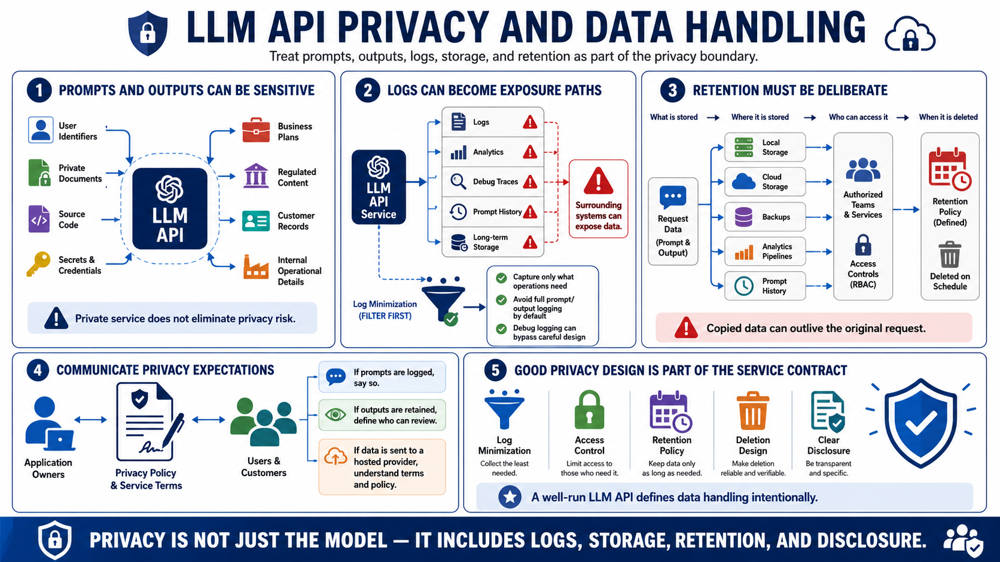

Data Privacy, Logging, and Retention
Connecting to LMS... Progress: in progress

Narration
Prompts and outputs should be treated as potentially sensitive data. They may contain user identifiers, private documents, source code, secrets, business plans, regulated content, customer records, or internal operational details. Even if the model service is private, the surrounding logs, analytics, debug traces, prompt history, and storage systems can become data exposure paths.
Log minimization is a practical privacy control. Capture enough information to operate the service, investigate errors, and support audit requirements, but avoid storing full prompts and outputs unless there is a clear need and an approved retention model. Redaction can help at a high level, but it is not a guarantee. Sensitive values may appear in unexpected forms, and overly broad debug logging can defeat careful API design.
Retention policies should define what is stored, where it is stored, who can access it, and when it is deleted. Prompt history may be valuable for user experience or troubleshooting, but it also creates privacy obligations. Local storage, cloud storage, backups, and analytics pipelines should all be considered. Data copied into secondary systems can outlive the original request unless deletion and retention are designed intentionally.
Privacy expectations should be communicated to application owners and users. If prompts are logged, say so. If outputs are retained for review, define who can review them. If data is sent to a hosted provider, understand provider terms and organizational policy. A well-run LLM API does not rely on vague assumptions about privacy. It defines data handling as part of the service contract.